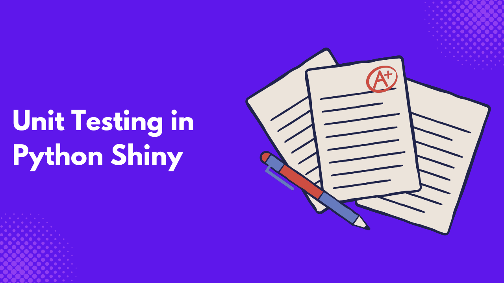
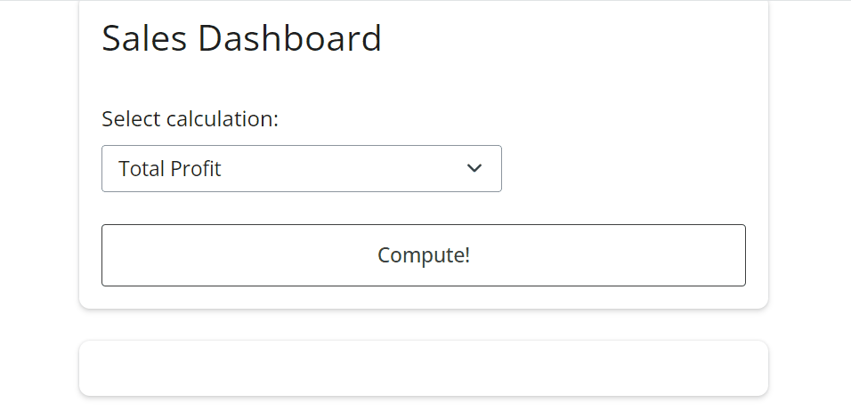
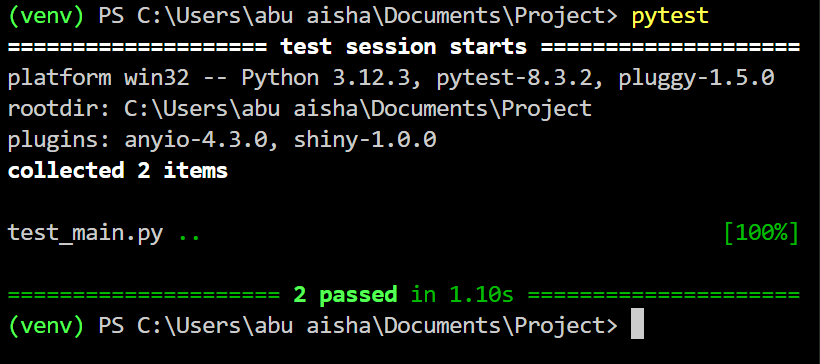

You are building a shiny application that processes and visualizes financial data, and a calculation function within the app for calculating financial ratios is incorrect; this could lead to misleading results and poor user decision-making. Unit tests allow you, the developer, to isolate and validate these functions independently, catch errors early, and ensure that changes in other application parts do not unintentionally break a function’s functionality.
Unit testing, also known as module or component testing, is the process of testing smaller components of an application to ensure they work as expected. Because unit tests are applied to various components and modules, they make it easy to identify and fix bugs in an application. They are also easy to write and don’t require any input or output from your application for you to run them. In this article, you will learn about unit tests and how you can effectively implement unit tests in your Python Shiny applications.
Separating Concerns
If you have ever been in a situation where you wrote some lines of code, only to come back months later and find it difficult to fix a bug in a component because you don’t know which component controls which. You can solve this problem by writing good unit tests for your application, and you need to separate concerns to achieve that. That is why, in Python Shiny applications, it’s important to separate business logic from reactive logic to ensure that the application is maintainable and scalable in the long run.
For example, look at the financial application you are building; the business logic is the computations and data processing of the app’s user interface, such as data validation, financial calculations, and error handling. The reactive logic is user inputs and reactive outputs, such as file uploads and selecting the financial ratio to compute, display of calculated ratios, generating and updating graphs, etc. Separating the business logic from reactive logic ensures:
- Accuracy and Reliability: By separating the business logic from reactive logic. You can rigorously test the business logic to ensure the calculations are correct.
- Maintainability: In the future, you can change business logic without affecting the reactive logic and breaking the user interface.
- Testability: Isolating each calculation in the business logic ensures that every function is tested independently and its value is computed before it is used in the Shiny environment.
- Reusability: One might want to use the business logic in one or more contexts or applications; this reduces redundancy and enhances code efficiency.
Choosing a Python Unit Testing Framework
Many Python unit testing frameworks exist, but you need to consider your project requirements, budget, and tech stack before choosing one. I recommend open-source unit testing frameworks, which are usually free and have strong, supportive communities with many resources to learn from.
Many Python unit testing frameworks are out there, such as unitest, behave, robot, etc. However, one of the most popular and widely used is the Pytest framework. Pytest is simple, scalable, and powerful, especially when working on projects with external dependencies.
Build a Demo Application
Let me demonstrate how Pytest works by building a simple sales dashboard based on supermarket sales data. First, ensure you have installed Shiny and Pytest.
pip install shiny pytestPaste the following code into a file utilis.py.
import pandas as pd
# Business Logic
def fetch_data():
data = pd.read_csv("supermarket_sales.csv")
return data
def total_profit(data):
profit = sum(data["gross income"])
return profit
def total_revenue(data):
revenue = sum(data["cogs"])
return revenueThis is our business logic for the Python Shiny application. To keep it simple, let’s restrict it to three functions.
fetch_data()to load the sales data.total_profit()to calculate the total profit.total_revenue()to calculate the total revenue.
Next, let’s build the application’s user interface. Copy and paste the following code into a separate file, main.py.
from shiny import reactive
from shiny.express import input, render, ui
from utilis import fetch_data, total_profit, total_revenue
with ui.card():
ui.h2("Sales Dashboard"),
ui.input_select(
"calculation", "Select calculation:", choices=["Total Profit", "Total Revenue"]
)
ui.input_action_button("compute", "Compute!")
with ui.card():
with ui.h1():
@render.text
@reactive.event(input.compute)
def result():
if input.calculation() == "Total Profit":
value = total_profit(fetch_data())
else:
value = total_revenue(fetch_data())
return valueRun this using the command.
shiny run --reload main.py
If you are building a toy project, you could deploy the application straightaway, but in production, you need to test for each and every component, especially your business logic. If you run the tests in the future and it fails, the unit test will help you track which function has a bug.
Using Pytest with Shiny
When writing tests with Pytest, your test files must start with either the prefix test_ prefix or end with the suffix_test. This ensures that Pytest identifies the files and functions to run the unit tests.
Copy and paste the following into a file,
test_main.py.
from utilis import fetch_data, total_profit, total_revenue
import pandas as pd
# Business Logic
data = fetch_data()
def test_total_profit():
assert total_profit(data) == 15379.369
def test_total_revenue():
assert total_revenue(data) == 307587.38- First of all, we have to import the data that loads the dataset and store it in the variable
data - The
test_total_profit()function tests if thetotal_profitfunction is giving the correct profit sum. - The same applies to the
test_total_revenue()function, which must be checked to ensure that it returns the correct revenue sum.
To run the test, call pytest on your terminal.
pytest 
Change the test_total_profit value in the test function to 16000 and run the test again.
def test_total_profit():
assert total_profit(data) == 16000
You will notice that not only did the test fail, but it also pointed out the function where it failed. This is very handy when your application has many functions.
Now, revert the test_total_profit()to its original value, change the name to total_test_profit(), and run the test.

You can see that only one of the tests ran, and this is due to the absence of the test_ prefix or _test suffix.
Python Unit Testing Best Practices
Here are some best practices for conducting unit tests on your Python Shiny applications.
- One Assertion Per Test: Avoid combining different assertions in a single test function. This will make it difficult to pinpoint issues when a test fails. Always make sure each of your test functions has a single assertion.
- Maintain Independence: Make sure your test functions are not reliant on the outcome of other test functions.
- Documentation: Document your tests to make them easier to maintain and update in the future. This will be handy for you or others who want to work on the project.
- CI Integration: You will notice earlier that we ran the test manually on the terminal; you can use continuous integration systems like GitHub Actions to automate the test periodically and even send alerts when something goes wrong.
- Maintenance: Don’t just write a test and forget about it. Regularly revisit the test and update it as you update your application codebase.
- Simplicity: Keep your test functions simple, so each test should test for a function in your application.
- Proper Naming Conventions: Adopt proper and descriptive naming conventions. Naming your test functions right will avoid overcrowding your test files with comments.
- Pay Attention to Code Coverage: High code coverage reduces the chances of having bugs in your application. When writing your test function, always account for every possible condition and error you might expect.
Conclusion
Writing tests, especially unit tests, might seem daunting initially, but it pays off in the long run. When a codebase grows large, it becomes difficult to debug, and these tests make it easy to pinpoint the location of bugs. As a developer who develops data applications, adopting sound software engineering principles, such as testing, is a good skill. In this article, you learned about Python unit testing and how to apply Pytest to your Python Shiny application. If you want to read more, here are some additional resources.
- A Beginner’s Guide to Unit Tests in Python (2023)
- Python’s unittest: Writing Unit Tests for Your Code
- A Gentle Introduction to Unit Testing in Python
- Top 9 Python Unit Testing Frameworks In 2024
- Assert statement for unit testing
- Unit testing: Python Shiny documentation.
Need Help with Data? Let’s Make It Simple.
At LearnData.xyz, we’re here to help you solve tough data challenges and make sense of your numbers. Whether you need custom data science solutions or hands-on training to upskill your team, we’ve got your back.
📧 Shoot us an email at admin@learndata.xyz—let’s chat about how we can help you make smarter decisions with your data.